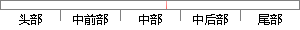

9 内存管理模块的设计
片段位置图

相似结果
相似片段：系统是类似的,同样具有多任务、内存管理、时间管理、文件系统、设备管理、异常... (9)异常处理模块 异常处理模块必须针对具体的商用操作系统、硬件来进行设计,...
| 标题 | 《嵌入式操作系统模块化设计方法分析 - 潜行 - 博客频道 - CSDN.NET》 |
| 对比库 | PaperRater云论文库 |
| 网址 | http://blog.csdn.net/ice1224/article/details/4414164 |
| 相似率 | 100% （严重抄袭） |
※ 片段修改建议 ※
近似词参考：- 设计：计划
- 管理：办理 经管 治理
系统自动生成语句：9 内存办理模块的计划
注：本片段修改建议为系统自动生成，仅供参考。